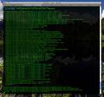
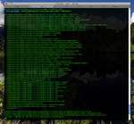

Progress Report
It's now been roughly two years since I decided I'd had enough of Microsoft and went in search of greener (or at least less annoying) pastures. It seems a reasonable time to sum up how it's been going again.
First off, it's safe to say that I'm a Rails developer now. I dabbled in a few other things (and I'm always up for learning more), but for me, Rails has offered the right balance between pleasure of development and being able to find interesting work that puts food on the table. My hourly rate for Rails is still not what my hourly rate for .NET was, but I'm OK with that tradeoff.
With two years of Rails work under my belt, I've moved to the point where I'm starting to contribute to the framework. Perhaps not surprisingly to those who know my history, I've figured out that the best spot for me to contribute is on the documentation side (although I have had one code change accepted to core). I'm helping out with the docrails project (which is producing, among other things, the Rails Guides) and contributing the weekly "edge Rails" roundups for the Riding Rails weblog. I've also started writing for Rails Inside and Ruby Inside.
I also find myself playing Pied Piper and helping other people make the transition from .NET to Rails - including Dana Jones, who happens to be my wife as well as a designer and developer in her own right (so now we have two Rails developers in the office and yes, we are available for hire). I won't say this is the career path for everyone, but it's certainly worked for me.
All in all, I'm happy with where my career stands right now. Sure, we could be busier, and the hourly rates could be higher, but that's always the case (and I have some other plans up my sleeve to help move in that direction). Overall, the increased happiness factor has made the transition more than worth it.
First off, it's safe to say that I'm a Rails developer now. I dabbled in a few other things (and I'm always up for learning more), but for me, Rails has offered the right balance between pleasure of development and being able to find interesting work that puts food on the table. My hourly rate for Rails is still not what my hourly rate for .NET was, but I'm OK with that tradeoff.
With two years of Rails work under my belt, I've moved to the point where I'm starting to contribute to the framework. Perhaps not surprisingly to those who know my history, I've figured out that the best spot for me to contribute is on the documentation side (although I have had one code change accepted to core). I'm helping out with the docrails project (which is producing, among other things, the Rails Guides) and contributing the weekly "edge Rails" roundups for the Riding Rails weblog. I've also started writing for Rails Inside and Ruby Inside.
I also find myself playing Pied Piper and helping other people make the transition from .NET to Rails - including Dana Jones, who happens to be my wife as well as a designer and developer in her own right (so now we have two Rails developers in the office and yes, we are available for hire). I won't say this is the career path for everyone, but it's certainly worked for me.
All in all, I'm happy with where my career stands right now. Sure, we could be busier, and the hourly rates could be higher, but that's always the case (and I have some other plans up my sleeve to help move in that direction). Overall, the increased happiness factor has made the transition more than worth it.
Double Shot #342
Somehow I survived November. Here's hoping December will be less stressful.
AssetPackager update - This plugin for compressing and minimizing Rails javascript and CSS assets has been updated for 2.2.
Breakage and fixage in Rails 2.2 - Another story of upgrading.
DearIE6 - Want to say goodbye to IE6 via Twitter? Now you can.
This Week in Edge Rails - I'm still doing this section of the main RoR weblog. It was a big week last week.
Overloading the parenthesis operator in Ruby - One of those things I hope never to have a need to do.
Rails 2.3: Backtrace Silencing
If you develop Rails applications, you're probably used to seeing this sort of thing in your log files:

Really, the only important thing there (as far as helping me find the source of the error) is the very first line of the backtrace:
Rails 2.3 (inspired by Thoughtbot's Quiet Backtrace plugin) is smart enough to just shut up about the parts I don't care. Here's the default Rails 2.3 log in the same situation:
[sourcecode language='ruby']
Processing PostsController#index (for 127.0.0.1 at 2008-11-29 08:12:31) [GET]
Post Load (0.0ms) SQLite3::SQLException: no such table: posts: SELECT * FROM "posts"
ActiveRecord::StatementInvalid (SQLite3::SQLException: no such table: posts: SELECT * FROM "posts" ):
/app/controllers/posts_controller.rb:5:in `index'
Rendered /Users/mike/scratch/blog23/vendor/rails/actionpack/lib/action_controller/templates/rescues/_trace (18.0ms)
Rendered /Users/mike/scratch/blog23/vendor/rails/actionpack/lib/action_controller/templates/rescues/_request_and_response (0.6ms)
Rendering /Users/mike/scratch/blog23/vendor/rails/actionpack/lib/action_controller/templates/rescues/layout.erb (internal_server_error)
Completed in 34ms (DB: 0) | 500 Internal Server Error [http://localhost/posts]
[/sourcecode]
Much nicer. Rails uses a combination of silencers (which just throw away lines matching a particular pattern) and filters (which make regex-based substitutions) to clean up the backtrace.
The guts of the backtrace cleaner are in ActiveSupport::BacktraceCleaner, letting you set up your own cleaners. Most of us, though, will be using the default backtrace cleaner that Rails spins up during initialization, Rails::BacktraceCleaner. Rails adds a variety of filters and silencers "out of the box":
[sourcecode language='ruby']
ERB_METHOD_SIG = /:in `_run_erb_.*/
VENDOR_DIRS = %w( vendor/plugins vendor/gems vendor/rails )
SERVER_DIRS = %w( lib/mongrel bin/mongrel lib/rack )
RAILS_NOISE = %w( script/server )
RUBY_NOISE = %w( rubygems/custom_require benchmark.rb )
ALL_NOISE = VENDOR_DIRS + SERVER_DIRS + RAILS_NOISE + RUBY_NOISE
def initialize
super
add_filter { |line| line.sub(RAILS_ROOT, '') }
add_filter { |line| line.sub(ERB_METHOD_SIG, '') }
add_filter { |line| line.sub('./', '/') } # for tests
add_silencer { |line| ALL_NOISE.any? { |dir| line.include?(dir) } }
end
[/sourcecode]
So, by default, Rails will throw away all the messages from the vendor folders and the servers, among other things. Naturally, you can change these defaults. Rails 2.3 adds a config/initializers/backtrace_silencers.rb file to your application. You can add your own silencers or filters in this file:
[sourcecode language='ruby']
Rails.backtrace_cleaner.add_silencer { |line| line =~ /my_noisy_library/ }
[/sourcecode]
You can also tell Rails to remove the default silencers if you're worried that you have uncovered a deeper bug:
[sourcecode language='ruby']
Rails.backtrace_cleaner.remove_silencers!
[/sourcecode]
Because the silencer is set up during the initialization process, you need to restart the server if you make any changes to it.
Currently in edge, the in-browser backtrace pages that you get in development mode show the full backtrace, not the silenced one.

Really, the only important thing there (as far as helping me find the source of the error) is the very first line of the backtrace:
ActiveRecord::StatementInvalid (SQLite3::SQLException: no such table: posts: SELECT * FROM "posts" ):. But Rails throws in another 55 lines of backtrace information, just in case I have exposed a bug somewhere in Active Record or Action Pack or the dispatcher or Mongrel or Rack or even the initial script/server command. In most cases, that's just noise.Rails 2.3 (inspired by Thoughtbot's Quiet Backtrace plugin) is smart enough to just shut up about the parts I don't care. Here's the default Rails 2.3 log in the same situation:
[sourcecode language='ruby']
Processing PostsController#index (for 127.0.0.1 at 2008-11-29 08:12:31) [GET]
Post Load (0.0ms) SQLite3::SQLException: no such table: posts: SELECT * FROM "posts"
ActiveRecord::StatementInvalid (SQLite3::SQLException: no such table: posts: SELECT * FROM "posts" ):
/app/controllers/posts_controller.rb:5:in `index'
Rendered /Users/mike/scratch/blog23/vendor/rails/actionpack/lib/action_controller/templates/rescues/_trace (18.0ms)
Rendered /Users/mike/scratch/blog23/vendor/rails/actionpack/lib/action_controller/templates/rescues/_request_and_response (0.6ms)
Rendering /Users/mike/scratch/blog23/vendor/rails/actionpack/lib/action_controller/templates/rescues/layout.erb (internal_server_error)
Completed in 34ms (DB: 0) | 500 Internal Server Error [http://localhost/posts]
[/sourcecode]
Much nicer. Rails uses a combination of silencers (which just throw away lines matching a particular pattern) and filters (which make regex-based substitutions) to clean up the backtrace.
The guts of the backtrace cleaner are in ActiveSupport::BacktraceCleaner, letting you set up your own cleaners. Most of us, though, will be using the default backtrace cleaner that Rails spins up during initialization, Rails::BacktraceCleaner. Rails adds a variety of filters and silencers "out of the box":
[sourcecode language='ruby']
ERB_METHOD_SIG = /:in `_run_erb_.*/
VENDOR_DIRS = %w( vendor/plugins vendor/gems vendor/rails )
SERVER_DIRS = %w( lib/mongrel bin/mongrel lib/rack )
RAILS_NOISE = %w( script/server )
RUBY_NOISE = %w( rubygems/custom_require benchmark.rb )
ALL_NOISE = VENDOR_DIRS + SERVER_DIRS + RAILS_NOISE + RUBY_NOISE
def initialize
super
add_filter { |line| line.sub(RAILS_ROOT, '') }
add_filter { |line| line.sub(ERB_METHOD_SIG, '') }
add_filter { |line| line.sub('./', '/') } # for tests
add_silencer { |line| ALL_NOISE.any? { |dir| line.include?(dir) } }
end
[/sourcecode]
So, by default, Rails will throw away all the messages from the vendor folders and the servers, among other things. Naturally, you can change these defaults. Rails 2.3 adds a config/initializers/backtrace_silencers.rb file to your application. You can add your own silencers or filters in this file:
[sourcecode language='ruby']
Rails.backtrace_cleaner.add_silencer { |line| line =~ /my_noisy_library/ }
[/sourcecode]
You can also tell Rails to remove the default silencers if you're worried that you have uncovered a deeper bug:
[sourcecode language='ruby']
Rails.backtrace_cleaner.remove_silencers!
[/sourcecode]
Because the silencer is set up during the initialization process, you need to restart the server if you make any changes to it.
Currently in edge, the in-browser backtrace pages that you get in development mode show the full backtrace, not the silenced one.
Double Shot #341
Hopefully I will shake off the post-turkey stupor and write some code today.
RubyConf08 Videos - Confreaks has got most of them processed and posted now, with more formats to come.
A Byte of Vim - Free eBook on using the Vim editor.
dj.god - The delayed_job god configuration used by github. This was a great help to me in setting up my own.
Gettin' less icky with the chronic - A way to make run all date attributes through chronic. I should take a closer look at this.
Double Shot #340
I'd forgotten how fun trying to pull all the pieces together on a last-minute high-pressure project could be.
Rubinius for the Layman, Part 3 - Try Rubinius in 20 minutes - Rubinius took a blow this week when Engine Yard let some folks go, but things are mature enough that you can see the current state of the project easily if you want.
If you use Mocha and RSpec then read this - Jake Scruggs points out a useful plugin if you're in this boat.
Calendar Date Select - Rails plugin for popup calendars. I used this in an app this week and so far it's working out nicely.
delayed_job
Looks like I'm going to roll out at least one and possibly two Rails applications that use delayed_job for asynchronous background job processing. What I haven't figured out is a good server-side deployment strategy. If you have, I'd love to talk to you.
Sorting ActiveRecord Objects
I recently hit a situation where I needed to sort an array of ActiveRecord objects on a particular attribute. The catch was that in this case the array started out with the results of a find operation - but then it had a bunch more transient objects added to it that weren't part of the database. Fortunately the Array#sort method makes short work of this. Given an array
[sourcecode language='ruby']
a.sort! {|x,y| x.entry_date <=> y.entry_date}
[/sourcecode]
Because this was the only sort I needed on this particular model, I decided to push the operation right down into the model:
[sourcecode language='ruby']
class Receipt < ActiveRecord::Base
def <=> (other)
entry_date <=> other.entry_date
end
end
[/sourcecode]
Then the sort is much simpler:
[sourcecode language='ruby']
a.sort!
[/sourcecode]
Note that this technique only makes sense if your array isn't coming straight from the database. If you are retrieving records from the database, you're better off including an
a of objects with an entry_date attribute:[sourcecode language='ruby']
a.sort! {|x,y| x.entry_date <=> y.entry_date}
[/sourcecode]
Because this was the only sort I needed on this particular model, I decided to push the operation right down into the model:
[sourcecode language='ruby']
class Receipt < ActiveRecord::Base
def <=> (other)
entry_date <=> other.entry_date
end
end
[/sourcecode]
Then the sort is much simpler:
[sourcecode language='ruby']
a.sort!
[/sourcecode]
Note that this technique only makes sense if your array isn't coming straight from the database. If you are retrieving records from the database, you're better off including an
:order clause in your finder to let the database do the sorting.
Double Shot #339
Too busy to do more than post a couple of links, alas.
Moving to Rails 2.2 Headaches - Vol 1 - Looks like mostly issues with various libraries not being ready yet.
jrails_in_place_editing - Now that it's been moved out of core Rails, there are a boatload of in-place edit plugins out there. This one seems to work OK in a project where we're using jQuery.
Double Shot #338
This month is definitely ending with a bang.
environment.rb and requiring dependencies - Why thread safety may require you to rearrange how you're handling initialization.
Rails 2.2: i18n, HTTP validators, thread safety, JRuby/1.9 compatibility, docs - The official release announcement.
Free Ruby eBook - The Book Of Ruby, new chapter: YAML - From the SapphireSteel folks.
This Week in Edge Rails - My latest contribution to the main Ruby on Rails weblog.
Rails 2.2 For Me And For You - Even if you've read the release notes you'll probably learn about more new features here.
Double Shot #337
There are times when I'm glad I'm not a big wheel in the Ruby community. Saves me all sorts of angst, apparently.
960 Grid System - Another CSS scaffolding system. Nice looking home page, at the very least.
The Art & Science of CSS - And speaking of CSS, here's a free book download from SitePoint. I've actually got this one in paper; it's not bad.
GitX 0.5 - This git GUI for OS X is developing nicely.
Base - Commercial (£10.00) GUI for SQLite. I should take a look at this one.
Skim - Fancy PDF reader and note manager for OS X.
The Opposite of Momentum or "Sophie’s Choice" for Rubyists - Another rubyist expresses general malaise about the state of the language.
Double Shot #336
Some days I am amazed that any software at all ever works.
Mike T's SQLite Database Administrator Tool - The icon is butt-ugly, but the tool is reasonably functional.
Ruby Isn't Fun Anymore - Apparently some people are not feeling the upstart excitement. I'm not one of them.
Gist Support for TextMate - Some people are clearly trying to turn TextMate into an operating system.
Live from Pro Rubyconf '08 / SMACKDOWN - Informal A/B testing at Pro RubyConf.
Rails TakeFive - Five Questions with Jay Fields - Another interesting interview from FiveRuns.
Vocito - OS X Desktop UI for Grand Central. Mildly interesting if only because it's the first sign of life from GC in months.
A Modest Proposal
There has been an astounding amount of invective and discussion over a recent addition to Rails. Briefly, if you have an array in Rails, you can now use ordinal numbers to get at the first ten members through aliases such as
Well, I'm not happy either - because the changes don't go far enough. Let's add one more method to
[sourcecode language='ruby']
Class Array
def by_ordinal(pos)
self[pos.to_i - 1]
end
end
[/sourcecode]
With this simple addition, you can refer to
Array#second, Array#third, and so on. Some people are concerned about code bloat, some are concerned about lack of elegance, and DHH's judgment in writing this bit of code has been seriously challenged.Well, I'm not happy either - because the changes don't go far enough. Let's add one more method to
Array and be done with it:[sourcecode language='ruby']
Class Array
def by_ordinal(pos)
self[pos.to_i - 1]
end
end
[/sourcecode]
With this simple addition, you can refer to
Array.by_ordinal("3rd"), Array.by_ordinal("21st"), or even Array.by_ordinal("407th"). As a bonus, the naming of the individual members is consistent with Rails' Inflector#ordinalize method. Please join me in pushing for this to be included in Rails core.
Double Shot #335
It's hard to work real effectively when your head is ready to explode. But self-employment doesn't come with paid sick days.
What's New in Edge Rails: Default Scoping - Ryan Daigle covers some of the latest changes.
SQL Injection Cheat Sheet - Read it as things to guard against rather than a cookbook, please.
Shoulda for RSpec is Remarkable - Another addition to the growing stable of testing tools.
Installing ruby 1.9preview1 on OS X Leopard - How to do it.
QBWC-Mini - Experimental Sinatra server for easier QuickBooks integration.
« Distribute Your Content With Amazon CloudFront - Amazon's new CDN. I expect we'll see Rails integration shortly.
Ruby on Rack #2 - The Builder - Pratik is still writing about Rack and how to use it.
Tutorial: Reset Passwords with Authlogic - Just what the title says.
Double Shot #334
Things are hopping a bit around here these days, thanks to some short-term work helping out other devs. It's always fun to come up to speed on a new project.
Smart Asset Management for Rails Plugins - An automated way for plugins to manage things like images and CSS in their hosting Rails project.
jQuery Selectors - Useful interactive page for figuring out how they work.
MiMo Displays - Serious gadget lust. I probably shouldn't save this bookmark.
Ruby on Rack #1 - Hello Rack! - If you've been wondering what all this Rack stuff is about, Pratik Naik has a good introduction.
Pushr - Automatic Rails application deployment via Capistrano and a Git repo hook.
Things Caches Do- A nice explanation, with pictures.
Rails 2.x: The Death of Application.rb
Here's a commit message that showed up in the main Rails repository earlier today:
Well, getting rid of special casing is great, and this commit does indeed simplify some of the Rails internals a bit. But I can hear some of my readers cursing: this seems like an arbitrary change just when Rails 2.2 is about to come out.
Fortunately, if you're moving to Rails 2.2, this won't affect you (yet). We're close enough to 2.2 final that the main repository has been branched: there's now a 2.2 stable branch (which is currently accepting very few bug fixes) and a master branch that's targeted at Rails 2.3, or perhaps Rails 3.0. This change - and some other big changes that have been committed over the past few days - is on the master branch.
So, for Rails 2.2, don't panic. On the other hand, if you're tracking edge Rails closely, the next few weeks are likely to be a time of vast change (and instability) as some pent-up major changes hit the repository. Be sure you know what you're cloning before you set up a new Rails application.
BACKWARDS INCOMPATIBLE: Renamed application.rb to
application_controller.rb and removed all the special casing that was in
place to support the former. You must do this rename in your own
application when you upgrade to this version [DHH]
Well, getting rid of special casing is great, and this commit does indeed simplify some of the Rails internals a bit. But I can hear some of my readers cursing: this seems like an arbitrary change just when Rails 2.2 is about to come out.
Fortunately, if you're moving to Rails 2.2, this won't affect you (yet). We're close enough to 2.2 final that the main repository has been branched: there's now a 2.2 stable branch (which is currently accepting very few bug fixes) and a master branch that's targeted at Rails 2.3, or perhaps Rails 3.0. This change - and some other big changes that have been committed over the past few days - is on the master branch.
So, for Rails 2.2, don't panic. On the other hand, if you're tracking edge Rails closely, the next few weeks are likely to be a time of vast change (and instability) as some pent-up major changes hit the repository. Be sure you know what you're cloning before you set up a new Rails application.
Double Shot #333
Lots of links piled up over the weekend. I'll try to get something more substantive posted later.
The Rails Myths - The list continues to grow, though it's also generating some responding posts and general snark elsewhere.
Beginner's Guide to Installing Merb - Updated for Merb 1.0. Still some hoops to jump through.
Speeding Up Rails Development - Some suggestions from Jim Neath.
new plugin: acts_as_git - Connect a text or string field directly to a git repo for easy versioning.
3 Ways To Build Fake Demo Data For Your Rails App - My latest for Rails Inside.
Rails 2.2 RC2: Last stop before final - Rails 2.2 is coming together.
WebKit Nightly Builds - The developer stuff in the latest WebKit builds is pretty spiffy - right-click and "inspect element".
A test server for Rails applications - Intended to be the Rails equivalent of RSpec's spec server.
Profiling Your Rails Application - Take Two - There are big advances in this area. Some day I may even understand them.
First, foremost and [0] - The difference between post.comments.first and post.comments[0] in Rails is subtle and surprising.
Double Shot #332
Been having great fun coming up to speed with shoulda the last few days. I think it's finally starting to make sense to me, though surely there are best practices I'm still missing.
Spandex MemCache Store - An enhanced version of the default Rails memcache bits.
RubyGems 1.3.1 - New minor release. So far it hasn't caused any new issues for my major applications.
Concurrency is a Myth in Ruby - Well, yes, although JRuby does present a different situation.
Shoulda Testing Cheat Sheet - A useful thing to have around when you're learning.
ActiveRitalin - A Rails plugin built on the premise that "Rails find_by_sql is the devil."
The Rails Myths - DHH tries to set the record straight. Good luck with that.
Double Shot #331
With my latest project past its initial design spike and settling down into more routine stuff, I'm still looking for more to take on, especially into December and beyond.
Getting Started with Cappuccino and Ruby on Rails - That's the Objective-J framework for desktop-like web applications.
forgery - Another approach to generating fake data in your applications.
Sometimes a tool isn't just a tool - Pat Maddox takes up the banner of Rails testing tools.
The Fast, Good and Cheap Pricing Method - Every consultant should know this stuff. A surprising number don't.
Gobby - Cross-platform collaborative text editor.
Rails 2.2 Change: Limited Resource Routes
Even though Rails 2.2 is officially in "release candidate" status, new features are still making their way into the source code tree. While we could debate the suitability of this from a release engineering point of view, some of the new features are certainly sweet. The latest is the addition of the
Normally, using
[sourcecode language='ruby']
map.resources :customers, :only => [:index, :show, :destroy]
[/sourcecode]
As with most places in Rails, you can use
[sourcecode language='ruby']
map.resources :customers, :except => :index
[/sourcecode]
That declaration would give you six of the seven default routes, omitting only a route for the index action.
In addition to an action or an array of actions, you can also supply the special symbols
Why do this? In addition to making your code easier to follow, the smaller you can make the routing table, the less memory it will take up - and the less processing time route recognition and generation will take. It can also lower the attack surface of your application by removing unused routes, which is a security win.
:only and :except options to RESTful routes. Normally, using
map.resources creates routes for all seven of the default actions (index, show, new, create, edit, update, and destroy) for the resource. But in Rails 2.2 (or in the current edge builds), you can fine-tune this behavior. The :only option specifies that only certain routes should be generated:[sourcecode language='ruby']
map.resources :customers, :only => [:index, :show, :destroy]
[/sourcecode]
As with most places in Rails, you can use
:except as the opposite of :only:[sourcecode language='ruby']
map.resources :customers, :except => :index
[/sourcecode]
That declaration would give you six of the seven default routes, omitting only a route for the index action.
In addition to an action or an array of actions, you can also supply the special symbols
:all or :none to the :only and :except options.Why do this? In addition to making your code easier to follow, the smaller you can make the routing table, the less memory it will take up - and the less processing time route recognition and generation will take. It can also lower the attack surface of your application by removing unused routes, which is a security win.
Double Shot #330
subscribe via RSS